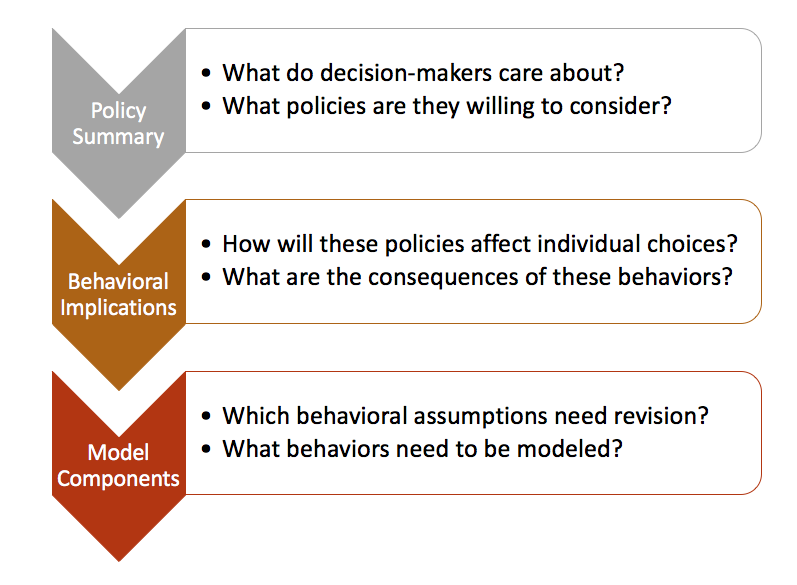

Edit This Page » (opens new window)
Autonomous vehicles
More pages in this category:
# Introduction
Connected and autonomous vehicles (CAV) are a rapidly evolving mode of travel, and one of several emerging megatrends in transport planning that will profoundly change travel behavior and patterns over the coming decades. There are several CAV definitions in the literature and press. There are enough that we have created a lexicon to define our terminology. We follow the SAE definitions (opens new window), which include six levels of automation ranging from none at all to fully connected and autonomous vehicles, with the latter including a high level of system-level control of the transport network. The discussion that follows assumes a fully automated future (SAE level 5), which we make explicit with the acronym CAV. Some of the concepts discussed may be applicable to lower levels of automation, but the focus here is upon CAV futures.
CAVs will influence all types of travel, from local commuting to long-distance travel. The discussion that follows applies to personal travel, primarily in the metropolitan settings. The parallel advances in freight and commercial CAVs (opens new window) are not addressed here, nor are related technologies such as delivery drones (opens new window) or hyperloops (opens new window). The design of specific models is not addressed in this discussion. Rather, the context, behavioral foundations, modeling mindsets and methods, success stories from elsewhere are profiled.
Simulating CAV effects will require fundamentally rethinking how most transport planning models are structured and applied. There are some effects that can be represented using traditional models, but the majority of likely behavioral changes will affect all traveler preferences, choices, and costs. Many of these will be second or higher-order effects that will be realized through feedback loops or replanning. Discussions about the policy and planning context, major behavioral changes, and modeling frameworks are described in the sections linked to below. Case studies of several evolving models are also presented. The reader should be able to grasp the appropriate modeling approaches in light of their requirements.
This collection of pages proposes a recipe illustrated below. The recipe begins with the modeler understanding the policy decisions the model will inform, and then a consideration of which transportation behaviors will be affected by these policies. Only then should the modeler consider which adjustments, if any, need to be applied to the model.

# Planning and policy context
A wide variety of questions about CAV futures are being posed by policymakers. A number of policy papers have been published on the topic, but they describe the problem space much better than specifying forecasting approaches. A number of policy issues and strategies identified in NCHRP Report 845 (opens new window) are summarized on the planning and policy context page. Other issues identified in other reports have been added to the discussion.
# CAV Penetration Rates
Most studies of the future of CAV agree on one thing: there is uncertainty as to when there will be widespread implementation of automated vehicles that are capable of operating at the higher levels of automation. Even after the initial highly automated driving applications become available for public use, the actual application is likely to grow gradually. And even after all new vehicles are equipped with an advanced feature, it will take a few more decades for the existing fleet to turn over. Even after all that, a significant portion of the population is likely to remain resistant to automation, so it is not realistic to expect the disappearance of human-driven vehicles even in the long term. The question this raises is: When will this gradual growth occur and what effect will that have on the future? This section - CAV Penetration Rates- highlights some of the research and observations about CAVs penetrations.
# Behavioral considerations
The availability of AVs, either as privately-owned, shared, or hired vehicles, will open a range of travel possibilities not available today, and change many aspects of current modes. Time spent traveling in CAVs will be spent on other activities, reducing the disutility and cost of travel. Sharing a CAV or forgoing private auto ownership will likely become commonplace, further changing mobility patterns and creating new travel opportunities for young, elderly, and disabled persons. These and other behavioral considerations will form the basis for model specifications that include the full range of CAV impacts on travel behavior and network performance.
# Operational and network considerations
The impacts of CAV operational characteristics are perhaps the most discussed in the industry to date. Much research has focused on the impact of connecting vehicles through DSRC into platoons of vehicles. The overall impact of better connected and more automated vehicles would be to increase capacity, dramatically shorten headway space and thereby improve coordinated acceleration and vehicle throughput, although operations that involve platoon formation and dissolution may decrease capacity. This section -- Operational and network considerations -- discusses these and other impacts in more detail.
# Modeling frameworks
The likely effects of CAVs will influence all aspects of travel behavior encompassed by travel forecasting models. This will necessitate a revolution in modeling frameworks suitable for measuring their extent and impacts. While the range of policy issues and strategies is long and varied, there are few AV futures that are unlikely to influence all aspects of modeled behavior, to include long-term location choices, short-term travel choices (to include daily activity patterns and activity scheduling), and network assignment. While some can be accommodated within the traditional four-step modeling paradigm most will be better addressed using visioning and activity-based travel modeling frameworks.
# Forecasting
Forecasting for uncertain futures has arguably never been more challenging than today, when CAVs are just one of several transformational economic, social, and technological changes likely to result in major changes in travel behavior and network performance. The section on forecasting discusses several considerations that are particularly germane when modeling CAV futures. It is important to note that new approaches to forecasting may be easier to implement and communicate than adapting existing models. Strategic Models provide the ability to simulate a wide variety of new transport options, modes, and services, either singly or in combination. They are viable alternatives to more sophisticated behavioral models when screening a large number of alternate futures.
# Use cases
Models are designed to inform policy decisions, not to predict the future. Thus, it is difficult to specify a particular model form that is useful or needed for every possible CAV scenario. Instead, you should consider the policies that decision makers want to address, what behaviors may result from those policies, and then consider what model forms or components will address those behaviors. In this page, we walk through this process for three separate policies:
1. Road widening projects will cease, and funds will be diverted to other uses
2. Some freeway lanes will be dedicated for CAV use
3. Authorities will levy an occupancy-differentiated VMT tax
See Use cases for more information.
# Early applications
A number of agencies have already incorporated CAV effects into their transport planning models and forecasts. They have been explicit from the outset in most visioning models. However, several agencies have begun explicitly representing them in travel forecasts for their region. None approach the ideal frameworks considered in our forecasting section, but many have or are working towards some of them. The early applications profiled include recent innovations from the Puget Sound region, the San Francisco Bay Area, and the Canadian province of Ontario.
# Further reading
A number of policymakers and planners have written white papers and reports describing how CAVs might affect land use and travel behavior over the coming decades. Many of these were reviewed in the preparation of this and related pages in TFResource. Some cover the policy, planning, and legal aspects of CAVs, to include:
- Advancing Automated and Connected Vehicles: Policy and Planning Strategies for State and Local Transportation Agencies (opens new window) (NCHRP Research Report 845)
- Driving Towards Driverless: A Guide for Government Agencies (opens new window)
- Making Better Places: Autonomous Vehicles and Future Opportunities (opens new window)
- Re-Programming Mobility: The Digital Transformation of Transportation in the United States (opens new window)
- Blueprint for Autonomous Urbanism (opens new window)
There is considerably less definitive guidance on how to include CAVs in travel forecasting models. One emerging resource is the on-going NCHRP Project 20-102(09) (opens new window), which seeks to provide guidance on how trip-based, activity-based, and visioning models might evolve in order to incorporate travel changes due to CAVs. A large number of academic papers and research reports have been recently published or in progress, but most of them cannot be quickly implemented and capable of addressing the issues described in the pages linked above.
# References
Last Updated: 8/17/2022, 11:56:28 PM
← Public transport (transit) modeling Land Use-Transport Modeling→